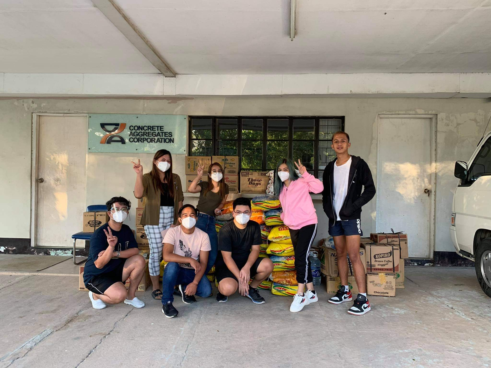
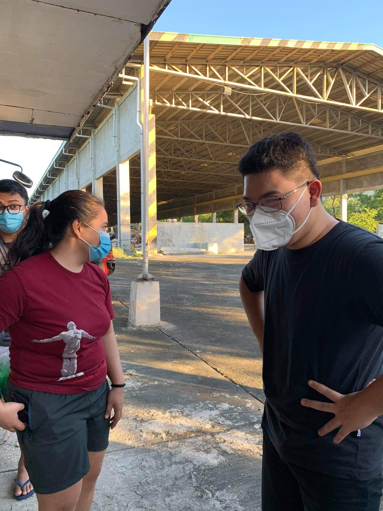
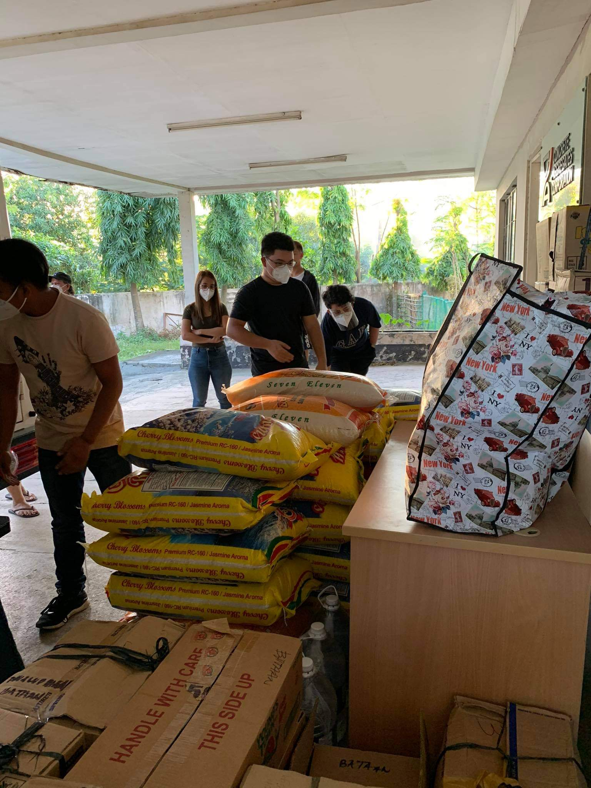
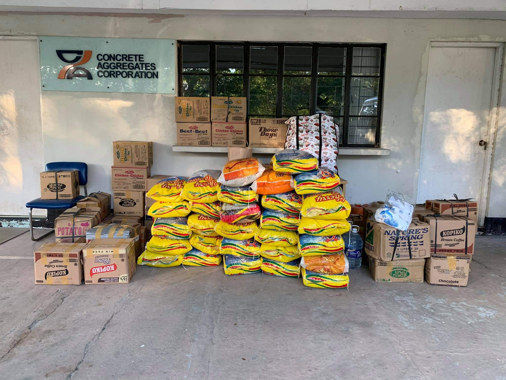

Resistance · Community & Service · Case
Bangon Cagayan Donation Drive
A relief effort I organized in Dinalupihan, Bataan with the help of five neighbors and churchmates after Typhoon Ulysses, showing how empathy can begin a response, but commitment and faith in one another are what carry it across distance.
Date: November 2020
Why this case matters
Empathy begins the response. Commitment carries it forward.
In November 2020, after Typhoon Ulysses affected communities in Cagayan Valley, I organized a donation drive in Dinalupihan, Bataan. Five neighbors and churchmates joined me in carrying it out. We were far from the communities we wanted to help, but distance did not feel like a sufficient reason to do nothing.
Empathy fueled us. What turned that empathy into action was commitment to the same cause and faith in one another's willingness to follow through. We were a small group, working with what we had, but each person believed the effort was worth carrying.
That is where the case becomes more than a relief drive. It is a small example of what Community looks like under Resistance: refusing to let distance, limited resources, and imperfect circumstances define the limits of what people can do together.
Documentary record
A small team, a shared response.
Five neighbors and churchmates helped carry out the drive I organized, from sorting and assembling donations to preparing the relief goods for onward coordination.




Case record
Local action, regional reach.
- Role
- Organizer
- Mobilized
- Approximately ₱150,000
- Support
- Cash and donated goods
- Origin
- Dinalupihan, Bataan
- Beneficiary region
- Cagayan Valley
- Regional link
- UP Anna na Cagayan
The work
Organizing locally, connecting regionally.
I initiated and organized the drive, while five neighbors and churchmates helped mobilize support, gather donations, and extend the effort through our local networks.
The effort pooled approximately PHP150,000 worth of cash and goods for affected communities in Cagayan Valley.
I also reached out to UP Anna na Cagayan, a University of the Philippines Diliman student organization composed of students from the Cagayan Valley, so the initiative could be connected with people who had closer knowledge of the region and its communities.
Reflection
Empathy fueled us. Commitment and faith in one another drove us.
The images of what happened in Cagayan were enough to make us care, but empathy alone would not have moved anything from Bataan to communities far away. The work depended on people choosing to stay committed after the first emotional response had passed.
I organized the drive, and five neighbors and churchmates helped carry it out. What sustained the effort was our trust in one another and our shared belief in the cause. That trust made coordination possible, and coordination gave our concern somewhere to go.
What I carry forward
Distance was a constraint, not a reason to stop.
The Bangon Cagayan drive changed how I understand community work. Help does not always begin with proximity. Sometimes it begins when people decide that being far away is not a sufficient reason to remain passive.
Empathy can begin a response, but commitment sustains it. Trust allows people to coordinate. Shared faith in the purpose, and in one another, is what lets help travel farther than any one person could carry it alone.
Resistance, in this case, meant refusing to let distance define the limits of our responsibility to one another. When a community believes in the same cause, help finds a way.
Community → Resistance
Return to the wider engagement.
Explore Community & Service for the broader questions around participation, access, trust, coordination, and shared responsibility.
Community & Service →